Как мы увеличили долю монетизируемых авторов внутри мобильной студии
Процесс + результат
Контекст
Монетизация — один из ключевых драйверов удержания авторов на платформе: чем больше авторов зарабатывает на контенте, тем выше их мотивация загружать видео, а значит — растёт вотчтайм и рекламная выручка RUTUBE
Бизнес-цель — увеличить эту долю, не снижая качество одобряемых заявок


Проблема
Авторы не понимали:
- Может ли их контент монетизироваться
- Как стать монетизируемым
- Какие требования предъявляются к заявке
Происходили регулярные обращения в поддержку в месяц по теме монетизации, заявки отклонялось из-за несоответствия требованиям
Появилась гипотеза: если сделать путь «условия → заявка → одобрение» прозрачным внутри интерфейса, вырастет доля авторов, которые доходят до одобренной заявки, и снизится нагрузка на поддержку
Моб. студия до монетизации
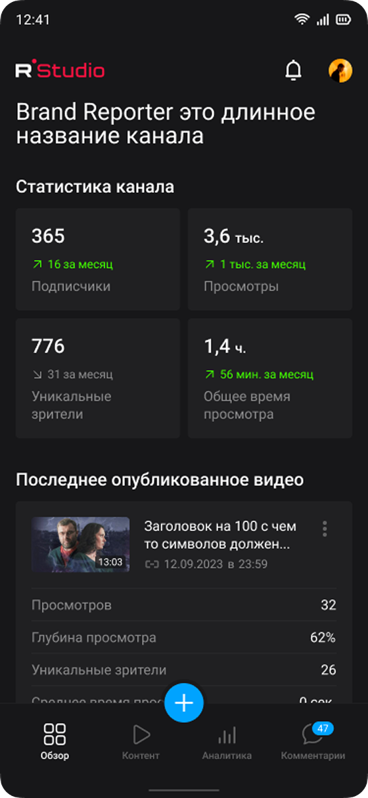
Процесс
Разбили путь автора на три этапа:
Выполнение условий → Подача заявки → Одобрение заявки
Сформулировали продуктовую цель: максимизировать долю авторов, которые выполнили условия и подали заявку, которая не будет отклонена (то есть оптимизировали не просто «подачу», а «подачу качественную» — иначе выросла бы нагрузка на модерацию без роста реальных партнёров)
На этапе исследования:
- Подняли аналитику по текущей воронке, чтобы найти, на каком шаге теряются авторы
- Прогнали тикеты поддержки по теме монетизации и сгруппировали по типам непонимания (не знают об условиях / не понимают, что не так с заявкой / не знают, что заявка вообще существует)
- Синхронизировались с командой модерации/комплаенса, чтобы понять, какие причины отказов самые частые — это стало входом для формулировки требований внутри формы

Ограничения
В ходе анализа собрали ряд ограничений, на которые опирались при разработке функции
Общий бэк
Бэк заявки один на веб и мобилку, переписывать под мобильный клиент нет возможности

Сроки
Сроки релиза и ресурс разработки очень ограничены

Комплаенс
Требования к заявке диктует комплаенс, дизайн их не упрощает — только объясняет

76% СМЗ
76% авторов мобильной студии, подходящих под условия — самозанятые, их данные уже есть в госсистемах, но интеграции на текущий момент нет

3 типа авторов
Заявку подают самозанятые, ИП и физлица. Состав документов и причины отказов у них разные

Категории авторов
Сформулировал проблемы по категориям авторов (Дошёл / Не дошёл до заявки), опираясь на анализ и декомпозицию, и на этой основе составил и приоритизировал гипотезы по их решению
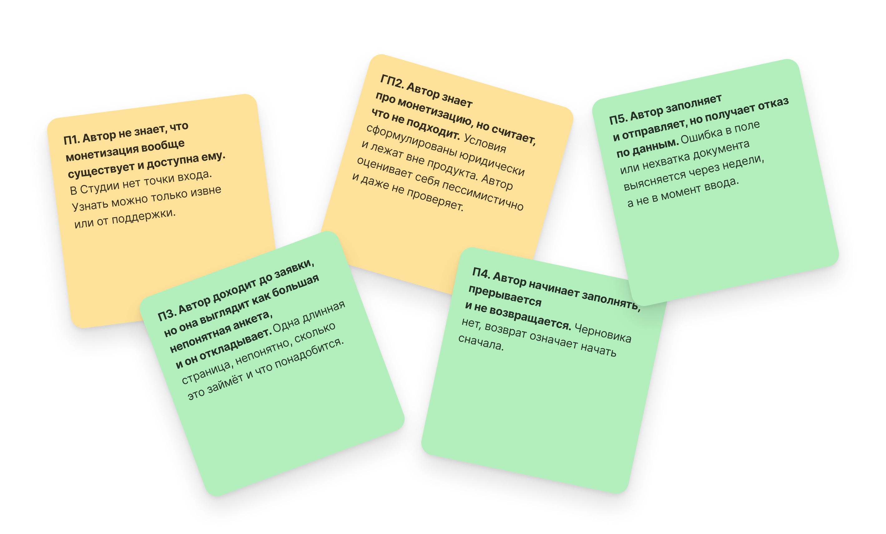
- Гипотеза 1. Если показать прогресс выполнения условий прямо на главной Студии, автор увидит, что монетизация ему доступна, и поймёт, чего конкретно не хватает. Охват максимальный, влияние высокое, уверенность высокая — подтверждено тикетами и бенчмарками. Фундамент для 1 релиза, делаем
- Гипотеза 2. Если отдать саму заявку в вебвью, автор сможет подать заявку не дожидаясь нативной формы, а мы за один спринт проверим гипотезу 1 на живых данных. Охват узкий, стоимость почти нулевая — осознанный компромисс, чтобы попасть в релиз
- Гипотеза 3. Если разбить форму на шаги внутри приложения, автор перестанет видеть длинную непонятную анкету, а данные будут проверяться на каждом шаге. Влияние высокое, но уверенность до теста средняя — степперы часто увеличивают время прохождения. Во 2 релиз, только после того, как данные докажут, что узкое место именно форма
- Гипотеза 4. Если сохранять черновик, автор вернётся к заявке после обрыва, а не начнёт с нуля. Влияние высокое: прерванная сессия сегодня равна потерянному автору. Во 2 релиз, в связке с гипотезой 3 — по отдельности смысла нет
- Гипотеза 5. Если подтягивать данные самозанятых из госсистем, автор не вводит их руками — падают и ошибки, и время модерации. Влияние максимальное из всех, но стоимость очень высокая — интеграция, закупка, юридическое согласование вне контура команды. Долго, выносим в отдельный релиз (позже это стало основой редизайна сценария)
- Гипотеза 6. Если присылать пуш при приближении к выполнению условий, автор вернётся вовремя. Дёшево, но уверенность низкая — легко превратить в спам. Бэклог
- Гипотеза 7. Если прогонять контент через предпроверку до подачи, автор узнает о нарушениях заранее. Нужен ML-сервис и формализованные критерии от модерации, которых на тот момент не существовало. Бэклог
Перед проектированием провёл исследование, чтобы выявить подходящее место для точки входа в монетизацию (раздел с условиями, аналитика выплат и т.д.): 426 респондентов, аудитория — авторы RUTUBE. У 84% не подключена монетизация
Анализ
Смотрели продукты с похожей механикой «условия → пошаговая заявка на монетизацию»
Что взяли:
- Явное отображение прогресса выполнения условий до подачи заявки (а не после)
- Пошаговую форму вместо одной длинной страницы — снижает когнитивную нагрузку и позволяет валидировать каждый шаг отдельно
Ключевой инсайт: во вью-версии (старая реализация, где условия и форма подачи заявки были представлены как статичная страница/веб-вью) конверсия проседала — очень небольшой процент авторов, выполнивших условия, доходили до подачи заявки. Основная точка потери — частичное заполнение заявки и невозможность возврата к определённому этапу
Решение
Из анализа воронки и паттернов конкурентов сформулировали два решения:
- Виджет прогресса выполнения условий — закрывает проблему «не понимаю, что уже сделано и что осталось». Автор в любой момент видит статус по каждому условию монетизации
- Пошаговая нативная форма заявки вместо статичного вью — закрывает проблему «форма выглядит длинной/непонятной», и позволяет валидировать данные на каждом шаге, а не после отправки всей заявки — за счёт этого снижается доля отклонённых заявок
Перед релизом протестировали прототип на авторах, чтобы убедиться, что пошаговая форма не увеличивает время прохождения и не роняет completion rate
MVP
 Геймификация
Геймификация Виджет заявки
Виджет заявки Пошаговая форма
Пошаговая форма Вовлечение в заполнение
Вовлечение в заполнениеПроверка гипотез
Сделал дизайн каждого из шагов, который проходит автор перед тем как стать партнёром
Тест расположения точки входа
Прогресс выполнения условий
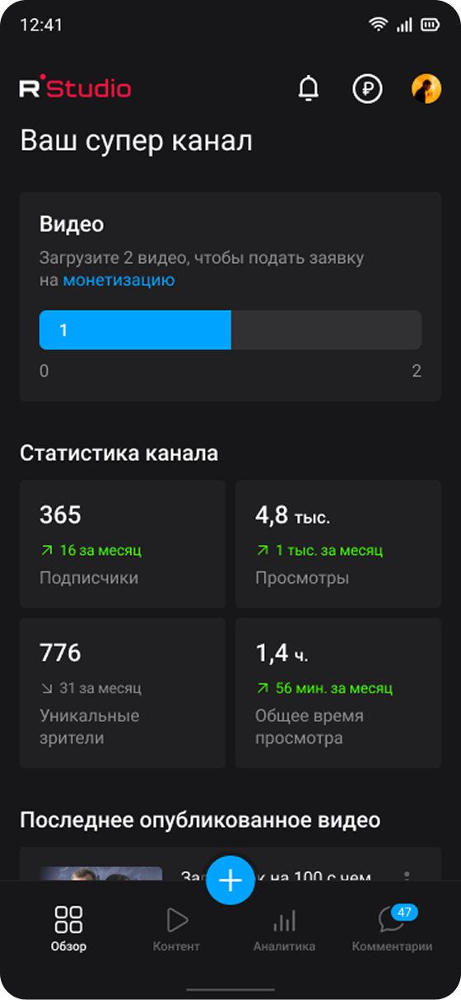
Прогресс-бар со статусами Прогресс-бар со статусами
Прогресс-бар со статусами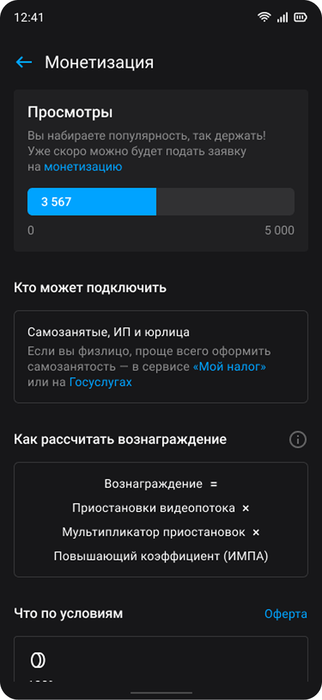
Страница с условиями и информациейФорма заявки — вебвью


Статус заявки
 После одобрения — баланс на главной
После одобрения — баланс на главной После одобрения — баланс на главной
После одобрения — баланс на главной При отклонении — виджет с причиной
При отклонении — виджет с причиной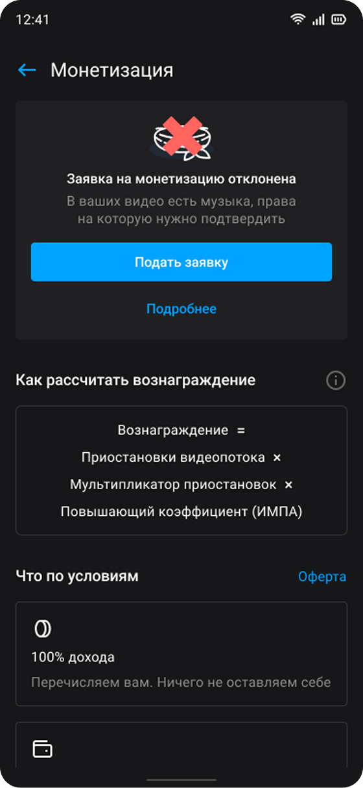
При отклонении — виджет с причинойНаходки после 1 релиза
1 релиз сделал ровно то, на что был рассчитан: авторы узнали о монетизации и пошли в форму. Но форма не сумела обработать этот поток должным образом — completion rate просел
Провёл серию глубинных интервью с авторами, которые заполнили заявку, и выявил трейдоффы решения:
- Пользователь уставал заполнять форму — сохранить черновик было нельзя, только начинать с нуля
- Сессия периодически прерывалась по инициативе пользователя или из-за ошибок бэка — автор отваливался на середине и недозаполнял заявку
- Внутри вебвью совершенно другой интерфейс, отличный от мобильной студии — это увеличивало количество отказов
- Большинство пользователей — самозанятые, официально зарегистрированные, их данные уже есть в госсистемах, но каждый раз приходилось вводить их вручную — это увеличивало и количество ошибок при заполнении, и время модерации
Нашим продактам удалось согласовать интеграцию с Госуслугами — в будущем это стало большим драйвером роста показателей одобрения заявок
Редизайн заявки
После релиза спроектировал редизайн заявки, который помогает довести пользователя до одобрения быстрее и проще:
- Вынес выбор типа автора вперёд и объяснил его — раньше был сухой список «самозанятый / ИП / физлицо», и люди останавливались с вопросом «а мне какой и для чего?»
- Переработал большую форму в последовательную с шагами: Создание кошелька → Авторизация в Госуслугах → Отправка данных → Ожидание модерации
Провёл исследование на 9 авторах — самозанятые, часть уже подавала заявку и получила отказ, часть не подавала вообще: первые дали материал по возврату после отказа, вторые — по первому входу
Что удалось проверить: пошаговость не увеличивает реальное время прохождения, completion rate не падает
Пошаговая форма

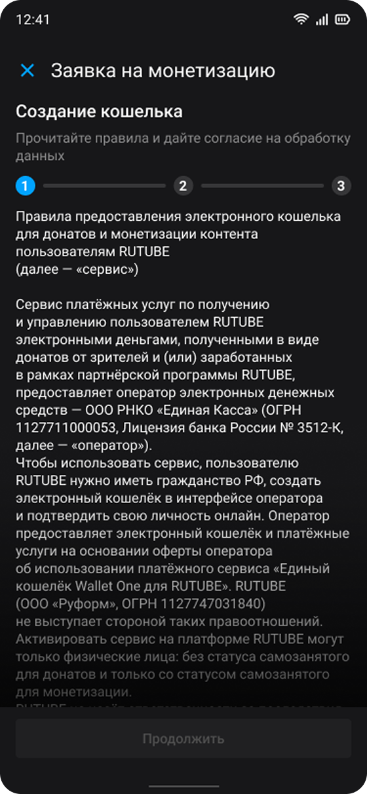
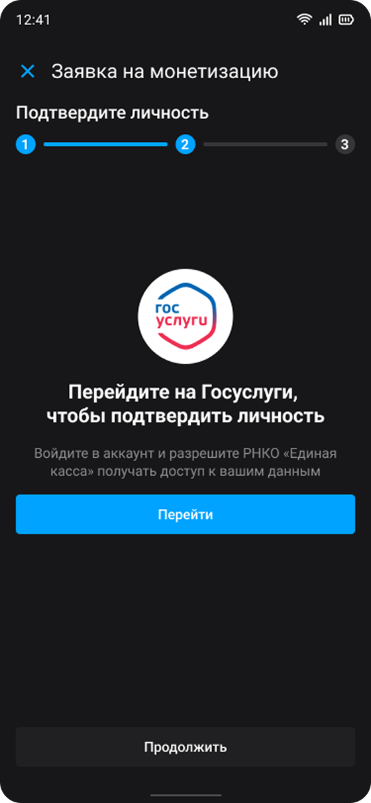
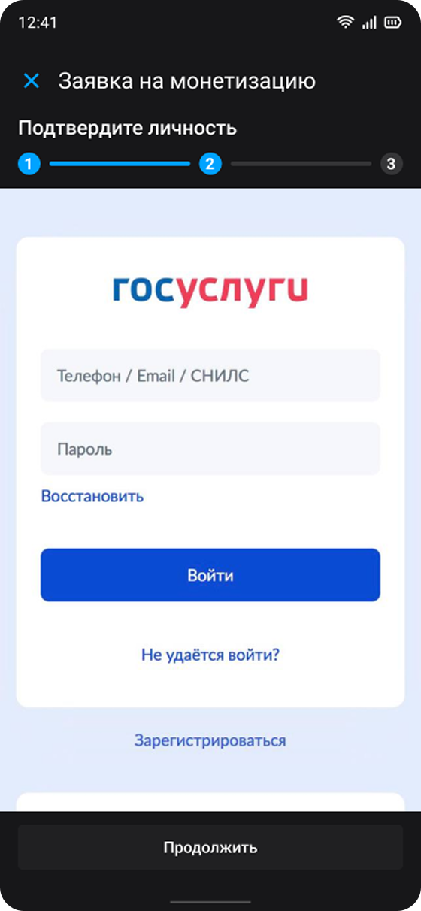

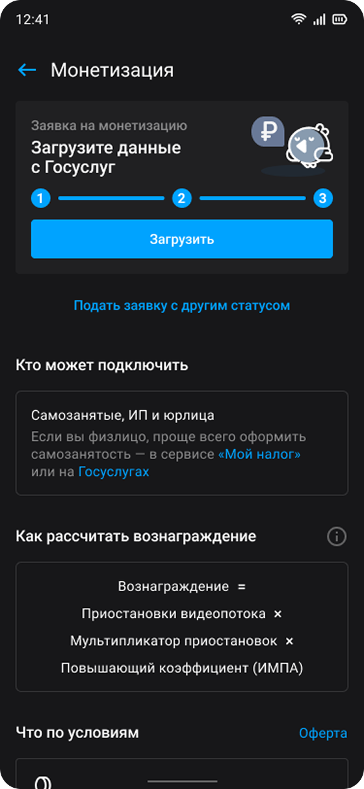

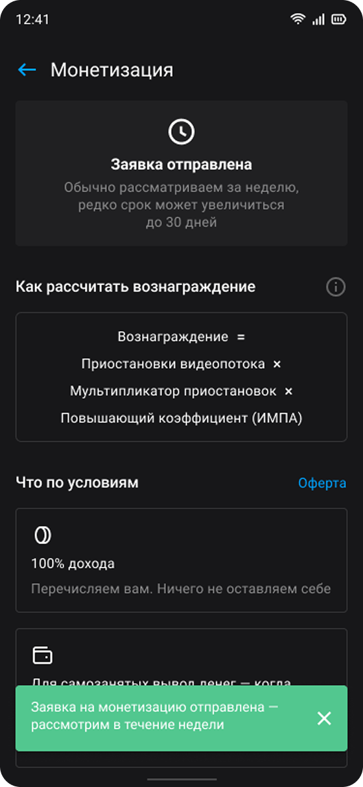
Результат
По данным аналитики в МСБ самая высокая доля партнёров
Партнёры — самая целевая аудитория авторов, поскольку они больше всего заинтересованы в загрузке контента → это напрямую увеличивает вотчтайм платформы → RUTUBE зарабатывает больше на рекламе
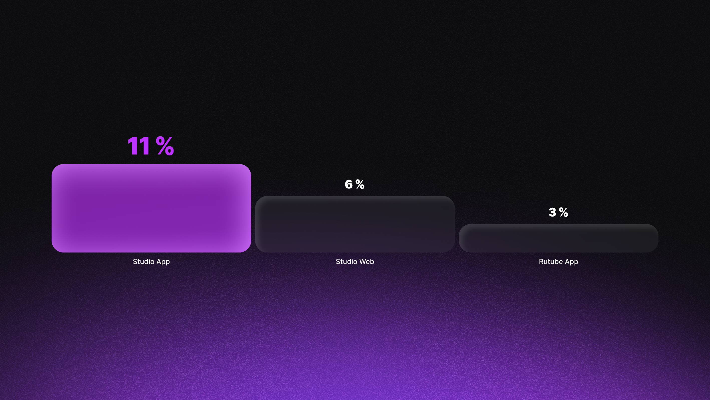
Как планируем развивать дальше
- Перенос сценария на ИП и юрлиц — оптимизировали под самозанятых как под массовый сегмент, ИП и юрлица — дополнительная точка роста
- Предпроверка контента до подачи — автор узнаёт о нарушении до того, как потратил время на заявку. Шаг зависит от модерации
- Уведомление о смене статуса заявки — сейчас автор узнаёт об отказе, только когда сам зайдёт в приложение или посмотрит почту
- Прогноз выполнения условий в виджете — «при текущем темпе вы выполните условие примерно через N дней». Дополнительная мотивация, но технически дорого